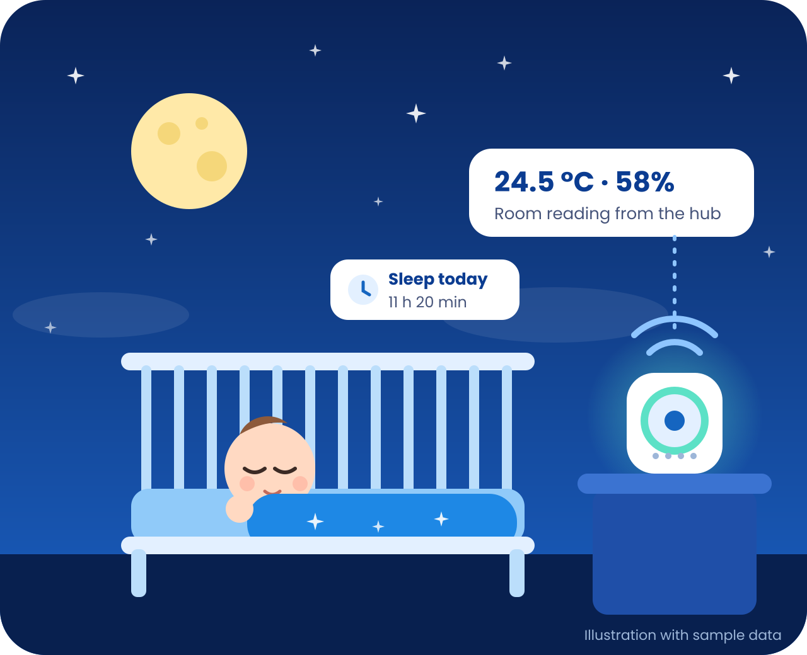
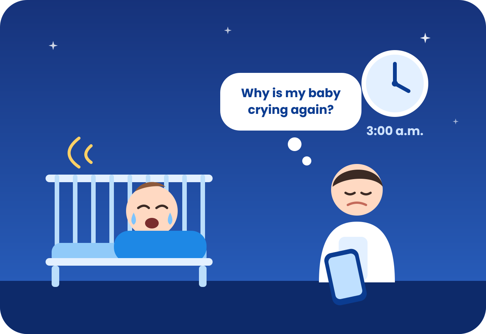
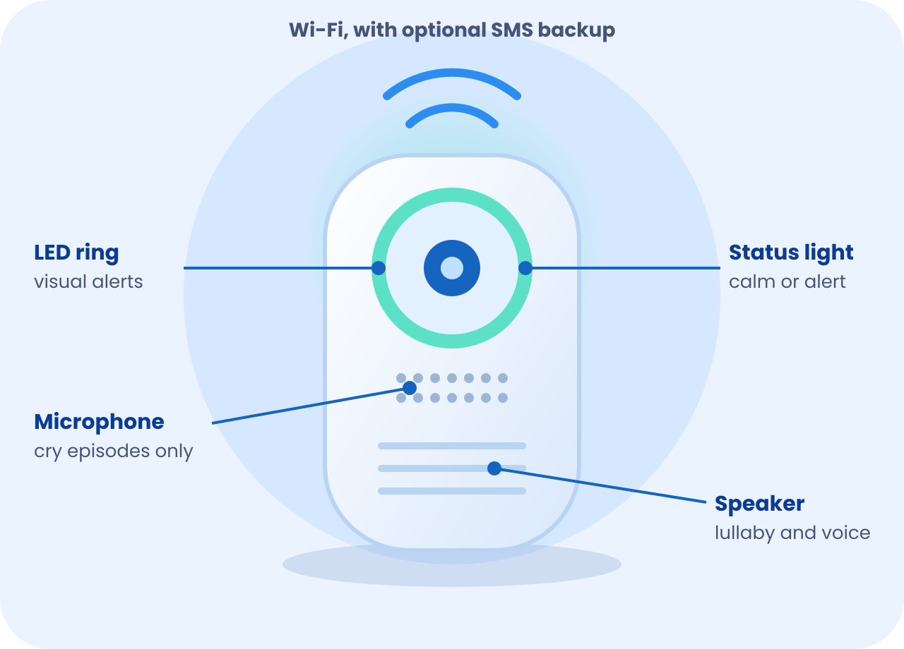
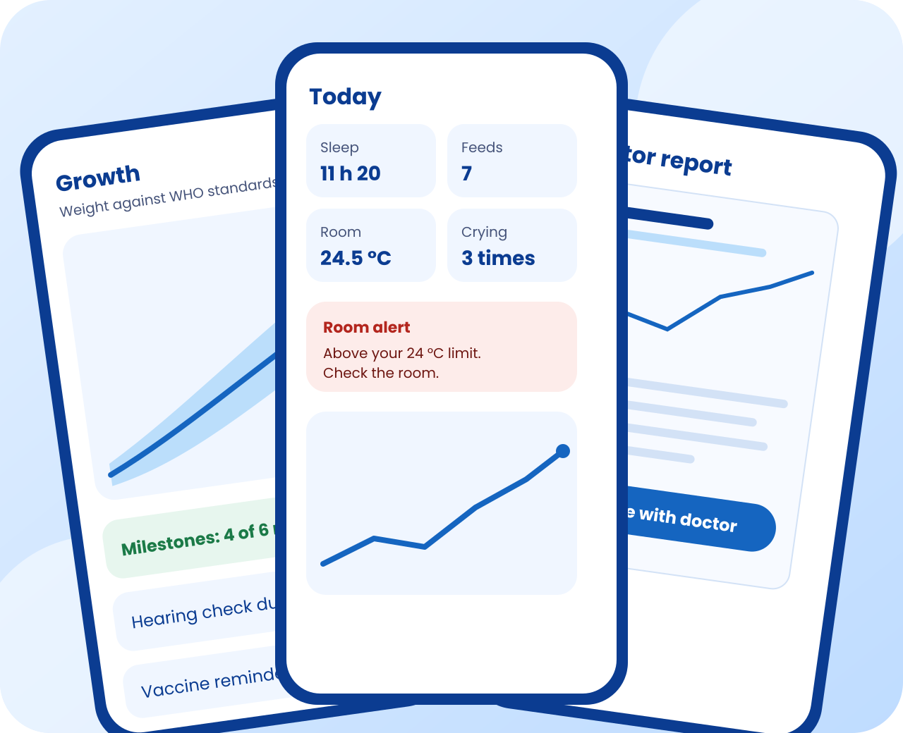

13.4 million
babies were born preterm in 2020, more than 1 in 10 births worldwide. WHO
LittleGuardian AI keeps feeding, sleep, growth and milestones in one place, checks the temperature and humidity of the baby's room, and turns it all into clear next steps and a report your paediatrician can read.
Guidance in English, Sinhala, Tamil, French and Spanish. Supports your care and never replaces your doctor.


New parents make health decisions every hour, often with scattered notes and conflicting advice online. The risk is highest for babies born early.
13.4 million
babies were born preterm in 2020, more than 1 in 10 births worldwide. WHO
About 20%
of families are affected by excessive infant crying, which is linked to stress and anxiety. Janssens et al. (2025)
Overheating
is a known risk factor for sudden infant death syndrome (SIDS). NICHD Safe to Sleep
Every family is different. LittleGuardian AI adapts to the baby, the parent and the language at home.
Know what is normal, keep every record in one place and feel calmer at 3 a.m.
Milestones are tracked by corrected age, and growth is plotted against WHO standards.
Screen reader support, large text, visual alerts for deaf parents and spoken guidance for blind parents.
Receive a clear, data-backed report, shared only when the parent chooses.

LittleGuardian AI connects what happens in the room with what you record every day.
It reads temperature and humidity and can notice when the baby is crying, how long and how often. It does not guess the cause, and it never stores raw audio.
Add feeds, sleep, growth and milestones in a few taps.
Alerts compare today with this baby's usual pattern, say why they fired and what to do next. One tap makes a report for your paediatrician.
The parent app shows sleep, feeds, room conditions and crying episodes on one screen. When something drifts from your baby's usual pattern, it tells you what changed.

Built for first-time parents, parents of premature babies, and families who need more than an English-only app.
Feeding, sleep and crying episodes with simple charts.
Weight and length against WHO standards, plus vision, hearing, movement and communication checks.
Temperature and humidity with alerts at limits you choose, even when Wi-Fi drops.
See when your baby cried, for how long and how often. Optional, and no audio is saved.
Every alert says what changed, why it matters and when to call a doctor.
A clear summary of trends and observations for your next appointment.
Play a lullaby or a recorded parent's voice from the hub.
Secure login, consent screens, encryption, and export or delete at any time.
Simple, plain words in English, Sinhala, Tamil, French and Spanish.
Set your own limit, then move the slider to see how the hub and app would react. You choose the limit that suits your home and your paediatrician's advice. UK safer-sleep guidance suggests a sleep room of 16 to 20 °C (The Lullaby Trust).
22.0 °C
Within your limit
The hub light stays calm and no alert is sent.
A regular monitor helps you keep an eye on your baby. LittleGuardian AI helps you understand their health and development over time.
| Feature | Regular baby monitor | LittleGuardian AI |
|---|---|---|
| Crying detection | Common on AI models, some suggest a cause | Yes: cry or not, how long, how often (not the cause) |
| Room temperature and humidity | Some models | Yes, with alerts at your limits |
| Feeding, sleep and growth records | Mostly no | Yes, with WHO growth charts |
| Vision and hearing milestones | No | Yes |
| Explainable alerts with next steps | No | Yes |
| Doctor-ready reports | Rare | Yes |
| Guidance in your language | No | English, Sinhala, Tamil, French, Spanish |
| Keeps working if Wi-Fi drops | Usually stops | Yes, readings are buffered, with an optional SMS backup |
Five students building LittleGuardian AI for the Agile Team Project module, 2026/27.
Team member
Team member
Team member
Team member
Team member
Tell us who you are and which language you prefer. We will email you when it is ready to try, and we may ask a few questions to shape it.
We only ask for what we need. Read the privacy notice at the bottom of this page.